Sitio web · Propuestas de diseño
Mismo contenido, misma estructura y mismas funciones. Cambia la personalidad. Elijan la que mejor represente a la firma; sobre esa afinamos los detalles.
Resumen
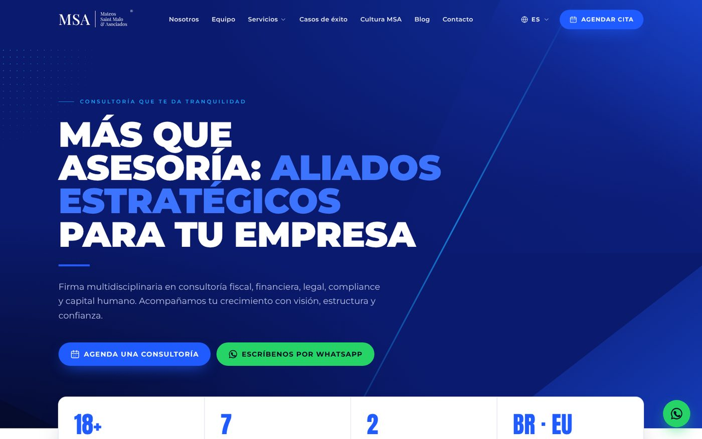
Fiel a su Instagram: azul intenso, titulares en mayúsculas y recursos gráficos diagonales. Máxima continuidad con sus redes.
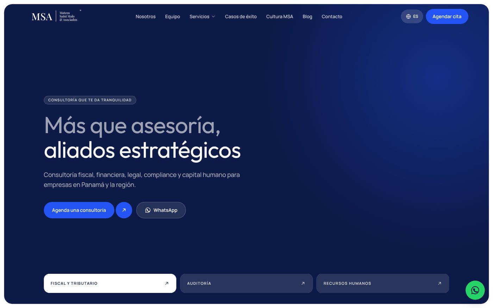
Luminosa y moderna: paneles redondeados, mucho aire y la foto como protagonista. Joven y actual sin perder seriedad.
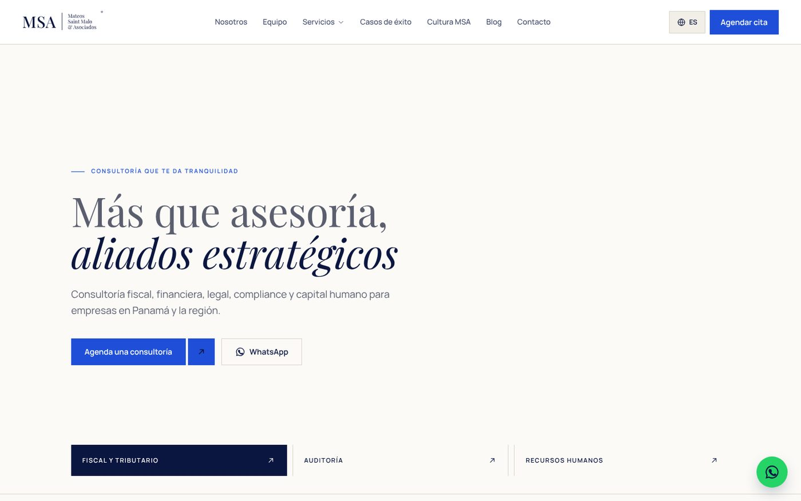
Clásica y premium: tipografía con serifa como su logotipo, líneas finas, fondo papel y secciones numeradas.
Propuesta A
Lleva al sitio la identidad que ya usan en redes, para que quien llegue desde Instagram reconozca la marca al instante.
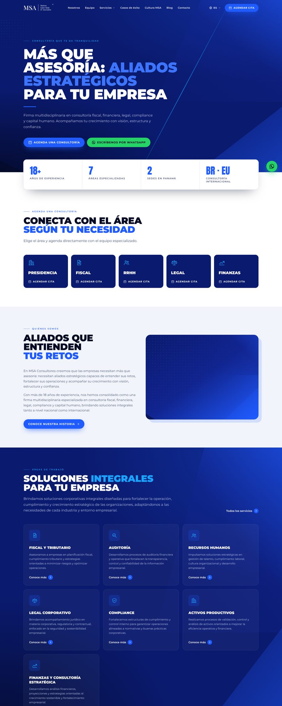
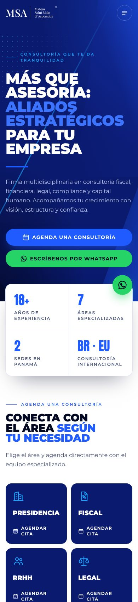
Propuesta B
Una imagen luminosa y ordenada, en la línea de las consultoras internacionales, con la foto del equipo como protagonista.
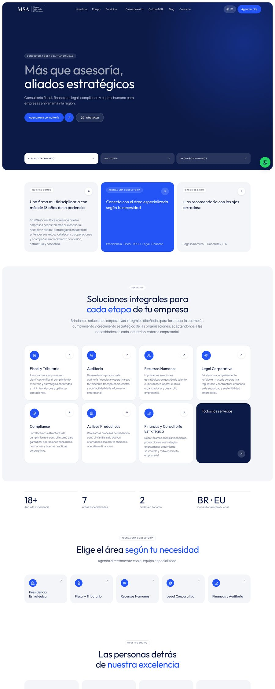
Propuesta C
Un sitio con aire de publicación financiera: transmite trayectoria y solidez, con un tono sobrio y exclusivo.
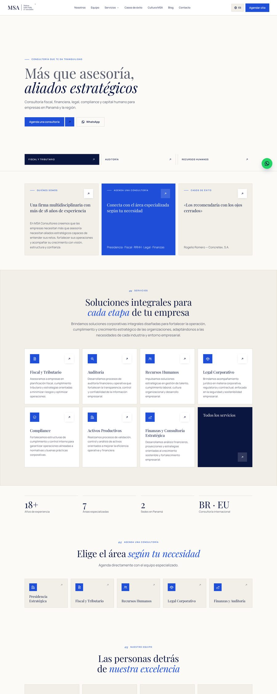
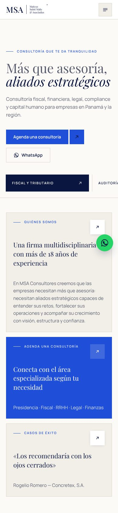
Detalle
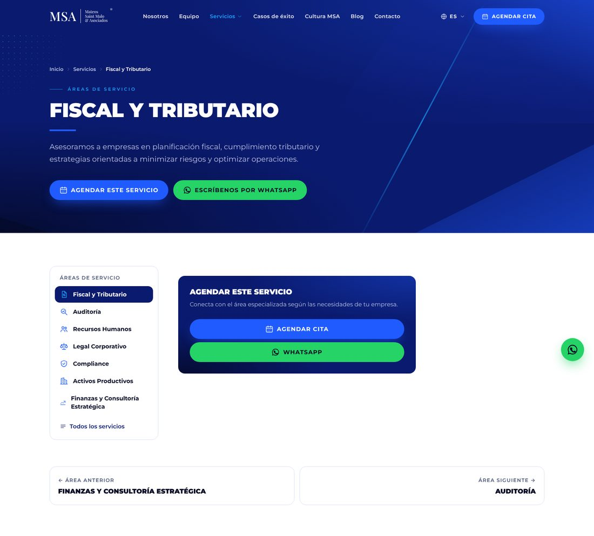
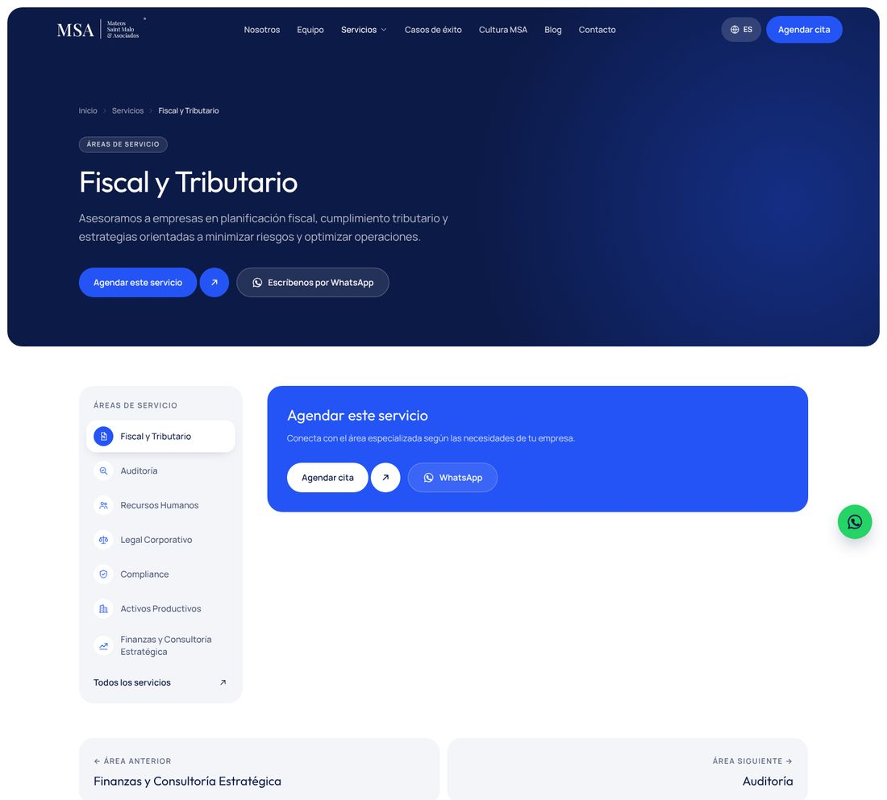
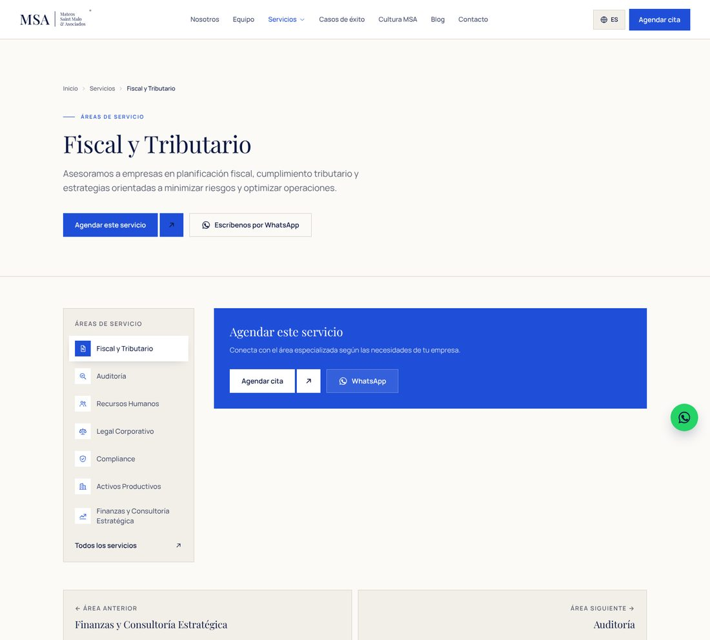
Comparación
| A · Impacto | B · Cercana | C · Editorial | |
|---|---|---|---|
| Personalidad | Enérgica, llamativa | Cercana, actual | Sobria, premium |
| Fondo dominante | Azul noche | Blanco y gris azulado | Papel cálido |
| Tipografía | Sans muy gruesa, mayúsculas | Sans de peso regular | Serifa con cursivas |
| Formas | Diagonales, stickers, puntos | Esquinas redondeadas, píldoras | Esquinas rectas, líneas finas |
| Relación con Instagram | Idéntica | Mismo azul, otro tono | Mismo azul, eco del logotipo |
| Lectura de textos largos | Correcta | Muy cómoda | Muy cómoda |
Próximos pasos
Las capturas no llevan fotos todavía: los espacios azules o grises son reservados. Con las fotos del equipo, cualquiera de las tres propuestas gana mucho.